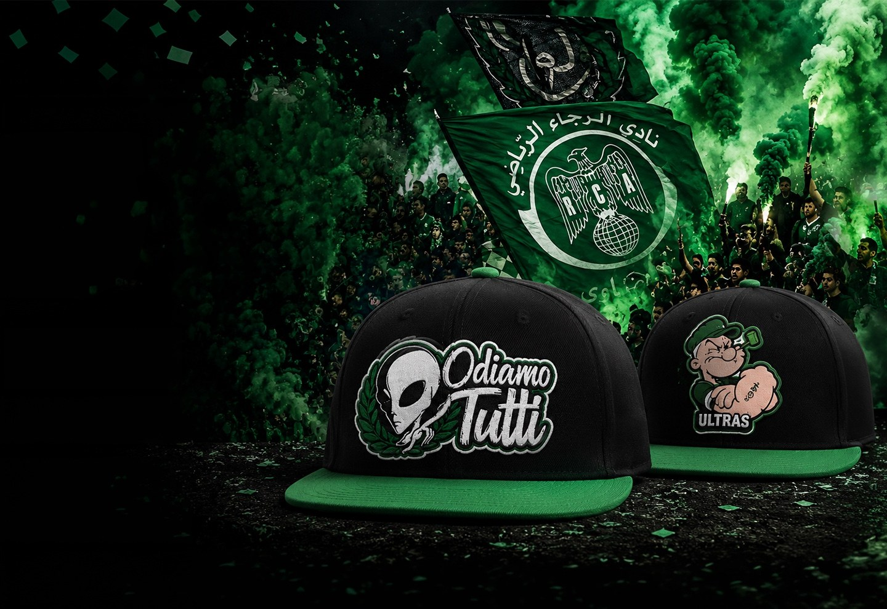
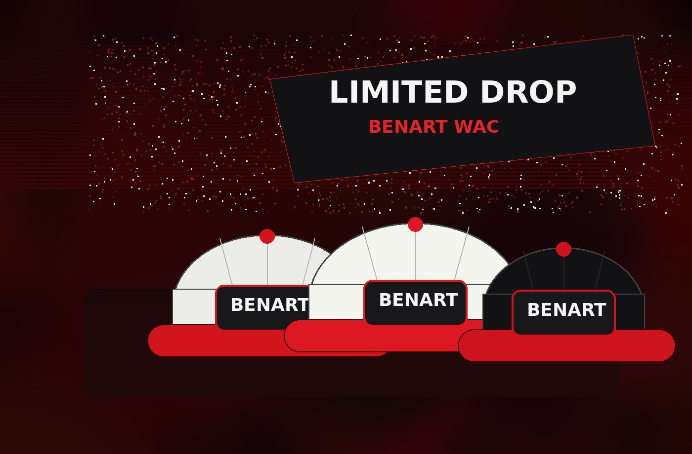

Drop vert · supporters
Green Legacy
Une collection inspirée de l’énergie des tribunes vertes, des tifos et des symboles populaires.
Plateforme e-commerce dédiée à la conception, la personnalisation et la commercialisation de casquettes premium en séries limitées, inspirées de la Botola Pro, des tifos, des tribunes et de l’identité des supporters marocains.
BENART Morocco se positionne entre le merchandising sportif, la mode urbaine et l’objet de collection. Chaque casquette est associée à une histoire, un symbole, un derby, une saison ou un moment fort du football marocain.
Chaque collection raconte une histoire liée aux clubs marocains, aux supporters, aux tifos et aux moments emblématiques.
Les modèles sont produits en séries limitées pour créer la rareté, l’exclusivité et l’attachement émotionnel.
BENART mélange identité locale, culture footballistique, design premium et univers urbain moderne.
Les visuels mettent en avant une ambiance forte : fumigènes, drapeaux, couleurs de clubs, énergie collective et esthétique premium.

Une collection inspirée de l’énergie des tribunes vertes, des tifos et des symboles populaires.

Une collection premium autour du rouge, de la passion, du sentiment d’appartenance et des grands rendez-vous.
L’innovation de BENART repose sur le produit, le digital et la personnalisation. Le but est de transformer l’achat en expérience.
Suggestions personnalisées selon les préférences du client : club, couleur, style, taille, historique et comportement d’achat.
Visualisation de la casquette avant achat pour améliorer l’expérience utilisateur et réduire l’hésitation.
Génération d’idées de motifs, patchs, broderies et concepts de collections à partir des inspirations fournies par le client.
BENART est plus premium et narratif que les boutiques de clubs, plus local que les marques internationales, et plus innovant grâce à l’IA, la personnalisation et les collections limitées.
| Concurrent | Activité | Positionnement | Différence BENART |
|---|---|---|---|
| HODHOD Concept | Casquettes, chapeaux, bonnets | Lifestyle premium marocain | Storytelling football |
| Capslab Maroc | Casquettes premium sous licences | Collectors premium | Ancrage local marocain |
| Concurrent | Activité | Limite | Opportunité BENART |
|---|---|---|---|
| Raja Shop | Boutique officielle | Produits standardisés | Design premium collector |
| Wydad Shop | Boutique officielle | Peu de personnalisation | Personnalisation avancée |
| FRMF Store | Produits équipe nationale | Offre limitée | Culture Botola Pro |
| Concurrent | Pays | Force | Limite |
|---|---|---|---|
| New Era | États-Unis | Leader mondial | Peu adapté aux marchés locaux |
| Mitchell & Ness | États-Unis | Vintage sportif premium | Positionnement très niche |
| Nike / Adidas / Puma | International | Distribution massive | Peu de storytelling local |
BENART adopte un modèle OEM : la marque se concentre sur le design, la direction artistique, la communication et la vente, tandis que la production est confiée à des partenaires spécialisés.
Idéal pour les prototypes, les petites séries, le contrôle qualité direct et la rapidité de communication.
Meilleur équilibre entre qualité, prix, flexibilité et production premium.
Adaptée à l’industrialisation à grande échelle avec coûts compétitifs et personnalisation complète.
| Norme | Rôle |
|---|---|
| ISO 9001 | Management de la qualité |
| OEKO-TEX Standard 100 | Sécurité des textiles |
| REACH | Contrôle des substances chimiques |
| IMANOR | Conformité au marché marocain |
Le budget initial de lancement couvre les ressources humaines, la logistique, la première production, la communication, les outils numériques et le marketing.
104 000 MAD pour les ressources humaines et 152 000 MAD pour la logistique et le lancement.
La stratégie de communication vise à construire une identité forte autour du football marocain, du streetwear, des supporters et des drops limités.
Raconter l’histoire derrière chaque drop : derby, tifo, saison historique, couleurs, symbole ou communauté.
Instagram pour l’image premium, TikTok pour la viralité, YouTube pour les formats longs et Facebook pour l’audience large.
Collaboration avec supporters, créateurs de contenu football, artistes streetwear, anciens joueurs et médias sportifs digitaux.
Optimiser BENART pour les moteurs de recherche classiques et les moteurs de recherche basés sur l’intelligence artificielle.
Le vrai défi de BENART n’est pas seulement de produire des casquettes, mais de construire une marque culturelle crédible, locale et durable.
Maîtriser le textile, la broderie, le branding, l’e-commerce, la logistique et la culture supporters.
Obtenir des collaborations officielles avec les clubs, communautés ultras, influenceurs et médias sportifs.
Financer la première production, le site, le marketing, le stockage, les prototypes et la communication.
Une marque pensée pour transformer la passion du football marocain en produit premium, collector et émotionnel.
Retour en haut ↑